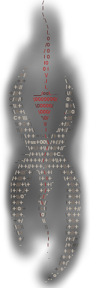

<!doctype html>
<meta charset="utf-8" />
<meta name="viewport" content="width=400">
<link href="style.css" rel="stylesheet" />
<link rel='shortcut icon' type='image/x-icon' href='../nyx.ico' />
<title>Design Concept | PHOENIX</title>

<main>

  <header>
    <a href="../"></a>
  </header>

  <h1>PHOENIX CONCEPT</h1>
  <h2>[ PROJECT NYX ]</h2>

  <h3>Index</h3>

  <ol>
    <li>Introduction
      <ol>
        <li>Phoenix Abstract</li>
        <li>Frequently Asked Questions</li>
        <li>Design Philosophy
          <ol>
            <li>The Vision of Gothic</li>
            <li>Four Design Principles</li>
          </ol>
      </ol>
    </li>  
    <li>Gamedesign
      <ol>
        <li>Features</li>
        <li>Principles of Reconstruction</li>
        <li>Interface & Controls</li>
        <li>Gameplay / RPG Mechanics
          <ol>
            <li>No EXPs/LPs</li>
            <li>Classes & Guilds</li>
            <li>Attributes</li>
            <li>Skills & Crafting</li>
            <li>Fighting System
              <ol>
                <li>Enemy/Monster AI</li>
                <li>Fight Tactics</li>
                <li>Weapon Progression</li>
              </ol>
            </li>
            <li>Magic System</li>
              <ol>
                <li>Two forms of Magic
                  <ol>
                    <li>Psionics</li>
                    <li>Runemagic</li>
                  </ol>
                </li>
                <li>Spell Progression</li>
              </ol>
            <li>Modular Armor Layer System</li>
            <li>Survival System
              <ol>
                <li>Inventar Management</li>
                <li>Regeneration</li>
                <li>Wear & Decay</li>
              </ol>
            </li>
            <li>NPC AI / NPC Interaction
              <ol>
                <li>Dialogues</li>
                <li>Trading</li>
                <li>Greetings</li>
                <li>GiveTake</li>
              </ol>
            </li>
            <li>Riddles & Secrets</li>
          </ol>
        </li>
        <li>Dubbing
          <ol>
            <li>Soundtrack</li>
            <li>Synchronisation</li>
            <li>SFX</li>
          </ol>
        </li>
      </ol>
    </li>

    <li>Lore
      <ol>
        <li>Mythologie
          <ol>
            <li>Schöpfungsmythen</li>
            <li>Aufstieg und Untergang der Mora</li>
            <li>Die Geschichte der Orks</li>
            <li>Uriziel und der 'Clan von Feind'</li>
            <li>Der Bluterde-Clan</li>
            <li>Der 'Heilige Feind'</li>
          </ol>
        </li>
        <li>Geographie
          <ol>
            <li>Myrtana
              <ol>
                <li>Tymoris</li>
              </ol>
            </li>
            <li>Varant</li>
            <li>Nordmar</li>
            <li>Adras</li>
          </ol>
        </li>
        <li>Geschichte
          <ol>
            <li>Die Spaltung der Priester</li>
            <li>Die Reichsgründung
              <ol>
                <li>Ketzerverfolgung</li>
                <li>Reichsbanner und Symbolik</li>
                <li>Myrtanische Hierarchie
                  <ol>
                    <li>Königliche Garde</li>
                    <li>Rote Garde</li>
                    <li>Auxiliarkräfte</li>
                    <li>Die Inquisition</li>
                    <li>Schwarze Garde</li>
                  </ol>
                </li>
              </ol>
            </li>
            <li>Der Krieg um Varant
              <ol>
                <li>Verrat an General Lee
                  <ol>Comic: Lee</ol>
                </li>
              </ol>
            </li>
            <li>Der erste Orkkrieg</li>
            <li>Der zweite Orkkrieg</li>
            <li>Die Kolonie
              <ol>
                <li>Gründung der Kolonie</li>
                <li>Das tymorische Reich</li>
                <li>Erschaffung der Barriere
                  <ol>
                    <li>Ritual, Foki und Fokusplätze</li>
                    <li>Intrige gegen Bergmar zu Westfeld</li>
                    <li>Das Alter der Barriere</li>
                  </ol>
                </li>
                <li>Die Revolte</li>
                <li>Xardas' Exil</li>
                <li>Der Zwist der Magier</li>
                <li>Y'Berion</li>
                <li>Ur-Shaks Verbannung</li>
                <li>Corristos Mystik und Rigaldos Brief</li>
              </ol>
            </li>
            <li>Zeittafel</li>
          </ol>
        <li>Kultur
          <ol>
            <li>Götterkulte</li>
            <li>Priester und Tempel</li>
            <li>Glaube und Glaubenshäuser</li>
            <li>Frauen, Sklaverei, Nacktheit</li>
            <li>Die Amazonen
              <ol>
                <li>Comic: Myrinas Kindheit</li>
              </ol>
            </li>
            <li>Alte Sprache
              <ol>
                <li>Runen</li>
                <li>Kleine Syntax</li>
                <li>Kleines Wörterbuch</li>
              </ol>
            </li>
            <li>Orkische Sprache
              <ol>
                <li>Orkische Schriftzeichen</li>
                <li>Orkisches Wörterbuch</li>
                <li>Ingame Botschaften</li>
              </ol>
            </li>
          </ol>
        </li>
        <li>(Meta)physik
          <ol>
            <li>Weltbild(er)</li>
            <li>Götter und Dämonen
              <ol>
                <li>RA / Innos</li>
                <li>Cyvanis / Adanos</li>
                <li>Vandras / Beliar</li>
                <li>Krushak / Ogront</li>
              </ol>
            </li>
            <li>Dämonen</li>
            <li>Magisches Erz
              <ol>
                <li>Wie das Erz magisch wird</li>
                <li>Arten von Erz</li>
                <li>Verarbeitungsprozesse</li>
              </ol>
            </li>
            <li>Drogen</li>
            <li>Magie
              <ol>
                <li>Die Psionik und die alten Mysterien</li>
                <li>Die Runenmagie und die 'Kreise'</li>
                <li>Formen und Systeme der Magie</li>
              </ol>
            </li>
          </ol>
        </li>
      </ol>
    </li>

    <li>Spielwelt
      <ol>
        <li>[Orpheus]
          <ol>
            <li>Oberwelt (Surface)
              <ol>
                <li>Austauschplatz</li>
                <li>Altes Lager</li>
                <li>Neues Lager</li>
                <li>Sumpflager</li>
                <li>Die Wälder</li>
                <li>Die Wege</li>
                <li>Der Alte Pass</li>
                <li>Die Trollschlucht</li>
                <li>Die Klosterruine</li>
                <li>Die Bergfeste</li>
                <li>Der Steinkreis</li>
                <li>Das Alte Kastell</li>
                <li>Der Nebelturm</li>
              </ol>
            </li>
            <li>Unterwelt (Dungeons)
              <ol>
                <li>Die Verlorene Mine</li>
                <li>Verlassene Mine</li>
                <li>Alte Mine</li>
                <li>Freie Mine</li>
                <li>Orkfriedhof</li>
                <li>Die Orkhöhlen</li>
                <li>Die Orkstadt</li>
                <li>Der Alte Tempel</li>
                <li>Dämonenwelt</li>
                <li>Sonstige Höhlen</li>
              </ol>
            </li>
          </ol>
        </li>
      </ol>
    </li>

    <li>NPCs
      <ol>
        <li>Humans & Orcs
          <ol>
            <li><a href="NPCs/NPC_IDs_Alpha-Orpheus.ods">NPC IDs</a></li>
            <li>NPC Description</li>
            <li>NPC Visuals</li>
            <li>NPC Routines</li>
            <li>Guilds</li>
            <li>Relations
              <ol>
                <li>Camp relations</li>
                <li>Faction relations</li>
                <li>Guild relations</li>
              </ol>
            </li>
          </ol>
        </li>
        <li>Monsters & Mutants</li>
      </ol>
    </li>

    <li>STORY
      <ol>
        <li>[ORPHEUS]
          <ol>
            <li>Story Summary
              <ol>
                <li>Chapter and Logic</li>
                <li>Dramatis Personae</li>
                <li>Intro (CS_Conviction)</li>
              </ol>
            </li>
            <li>Prolog: Willkommen in der Kolonie
              <ol>
                <li>Tutorial Parcour / VM</li>
              </ol>
            </li>
            <li>CH1: Die Welt der Verurteilten
              <ol>
                <li>Die Buddler</li>
                <li>Der Schürferbund</li>
                <li>Die Bruderschaft</li>
                <li>Der Konvoi</li>
              </ol>
            </li>
            <li>CH2: Die Wogen des Wahnsinns
              <ol>
                <li>Der Fokus</li>
                <li>Das Nest der Crawler</li>
                <li>Der Almanach</li>
                <li>Die letzte Anrufung</li>
              </ol>
            </li>
            <li>CH3: Artefakte von Uralter Macht
              <ol>
                <li>Der Orkfriedhof</li>
                <li>Die Trollschlucht</li>
                <li>Die Klosterruine</li>
                <li>Der Steinkreis</li>
                <li>Die Bergfeste</li>
                <li>KDW Ritual</li>
              </ol>
            </li>
            <li>CH4: Der Dämonenbeschwörer
              <ol>
                <li>Der verbannte Schamane</li>
                <li>Die Sprache der Orks</li>
                <li>Das Ulumulu</li>
              </ol>
            </li>
            <li>CH5: Die Hüter des Portals
              <ol>
                <li>Die Stadt der Orks</li>
                <li>Der Tempel</li>
                <li>Uriziel</li>
              </ol>
            </li>
            <li>CH6: Die Hallen des Schläfers
              <ol>
                <li>LoadUriziel</li>
                <li>The Mad Scientist Chainsaw Massacre</li>
                <li>Showdown</li>
                <li>The End of the Night</li>
              </ol>
            </li>
          </ol>
        </li>
        <li>Zwischen ORPHEUS und NEMESIS
          <ol>
            <li>Die Blutnacht</li>
            <li>Das Marionettenspiel
              <ol>
                <li>Xardas, der König und die Magier</li>
                <li>Xardas, die Orks und der Dämonenkult</li>
                <li>Xardas' Plan</li>
              </ol>
            </li>
            <li>Spielwelt, Camps & Gilden
              <ol>
                <li>Bloodearth (Surface)</li>
                <li>Refugee Camp
                  <ol>
                    <li>Die Meister und die Revolution</li>
                    <li>Die Schule der Mystiker</li>
                  </ol>
                </li>
                <li>The Condemned</li>
                <li>The Kings' Camp</li>
                <li>Camp of Tents</li>
                <li>Inquisition Camp</li>
                <li>The Mystic Forests</li>
                <li>The Orc Siege</li>
                <li>Demon Cult</li>
                <li>The Asylum</li>
              </ol>
            </li>
            <li>Zeittafel</li>   
          </ol>
        </li>

        <li>[NEMESIS]
          <ol>
            <li>Story Summary
              <ol>
                <li>Chapter and Logic</li>
                <li>Dramatis Personae</li>
                <li>Intro</li>
              </ol>
            </li>
            <li>Prolog: Willkommen im Krieg
              <ol>
                <li>Darko Raid</li>
              </ol>
            </li>
            <li>CH7: Die Rückkehr
              <ol>
                <li>Das Flüchtlingslager</li>
                <li>Die Räuber</li>
                <li>Der Aufbruch</li>
                <li>Malice (DemonSpawn)</li>
              </ol>
            </li>
            <li>CH8: Das Bluterz
              <ol>
                <li>Der König</li>
                <li>Die Geächteten</li>
                <li>Die letzte Mine (Vault)</li>
                <li>OCChaos</li>
              </ol>
            </li>
            <li>CH9: Die Offenbarung
              <ol>
                <li>The Asylum / Phoenix (Jailhouse Rock)</li>
                <li>The Clans (In Flames)</li>
                <li>The Cult and the Prophetess</li>
              </ol>
            </li>
            <li>CH10: Die Entscheidung
              <ol>
                <li>The Dementors</li>
                <li>The Sceptre</li>
                <li>Into the Pit</li>
                <li>The End of Dreams</li>
              </ol>
            </li>
          </ol>
        </li>
      </ol>
    </li>
    <li>APPENDIX
      <ol>
        <li>Contributors</li>
        <li>...</li>
      </ol>
  </ol>

</main>
